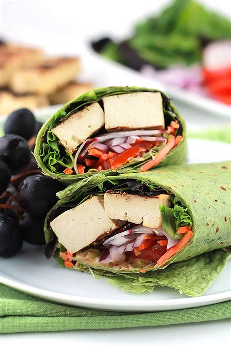

How to Make a Healthy Buffalo Tofu Wrap

Description
You will spend less than 5 minutes preparing this awesome buffalo tofu wrap.
Ingredients
- 1 pack of hard firm tofu
- 1 bottle of buffalo hot sauce
- 1 package of spinach wraps
- 1 head of lettuce
Steps to Cook
- Pan fry the tofu on a skillet for 5 minutes
- Season tofu to taste
- Remove tofu and mix with whatever amount of hot sauce you like
- Pack as much tofu into one toasted spinach wrap as humanly possible
- Chow that thing down!